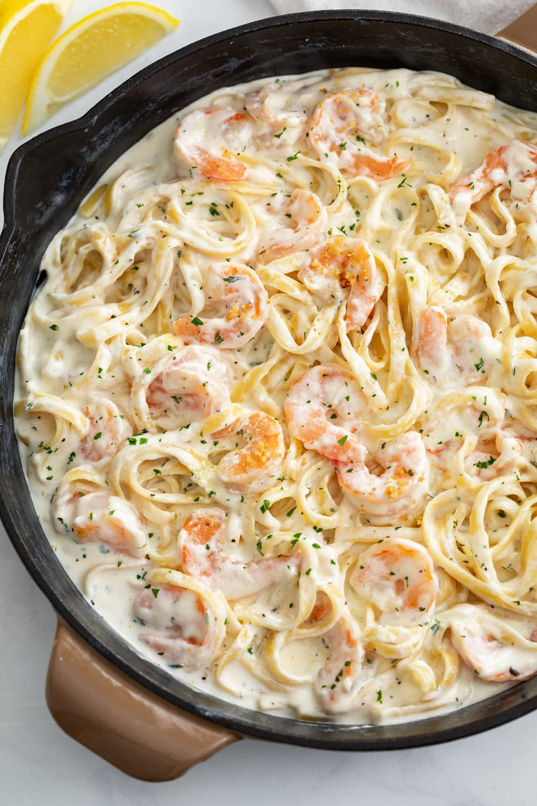

Shrimp Alfredo

Description
Creamy Shrimp Alfredo has been a staple dish of mine ever since I moved out of my college's dorm. While it is entirely possible to use jarred alfredo sauce, making your own sauce is so easy and can be done while your pasta is cooking! If you aren't a fan of shrimp then feel free to substitute in chicken, tofu, or just some veggies. Below you will find the ingredients and the steps to make your homemade Shrimp Alfredo.
Ingredients
Crunchy Panko Topping (Optional)
- 1/4 cup Panko breadcrumbs
- 1 tablespoon salted butter
- 1/8 teaspoon garlic powder
Shrimp Alfredo
- 1 lb. large uncooked shrimp
- 1 tablespoon olive oil
- 3/4 lb. Fettuccine
- 6 tablespoons salted butter
- 3 cloves garlic
- 2 tablespoons all-purpose flour
- 3 cups half and half
- 1/2 cup Parmesan cheese
- 1/2 cup Asiago cheese
Seasoning
- 1 teaspoon dried parsley
- 1/2 teaspoon dried basil
- 1/4 teaspoon salt
- Freshly cracked pepper
For Serving
- 1 Lemon
- Red Pepper Flakes
- Fresh parsley
Steps
- Measure out ingredients before beginning. Thaw the shrimp completely and pat the surface dry. You may also need to remove the shell, tail, and veins.
- Optional: Toast the Panko breadcrumbs and garlic powder in melted butter in a skillet over medium heat until brown, about 3 minutes. Remove and set aside.
- Heat olive oil in a large skillet over medium-high heat. Add the shrimp and cook for about 1 minute + 20 seconds per side. (Use a timer to avoid overcooking). Tilt the pan to transfer the shrimp onto a clean plate. Note that they'll cook a little bit more as the sit, and again when added back to the sauce.
- Boil the fettuccine in salted water according to package instructions. Meanwhile, prepare the sauce.
- Melt the butter in the same skillet over medium heat. Add the garlic and cook for one minute.
- Whisk in the flour and cook for 1-2 minutes, stirring continuously.
- Add the seasonings, then add the half and half in small splashes, stirring continuously.
- Bring to a gentle bubble, then reduce heat to low. It will continue to thicken as it simmers.
- Stir in the cheese. Taste and season with salt/pepper if desired.
- When the pasta is done, reserve 2 cups of pasta water and set aside.
- Drain the pasta and add it to the sauce, toss to combine. The pasta will absorb the sauce and it will continue to thicken. If it becomes too thick, add a little pasta water until desired consistency is obtained..
- Add the cooked shrimp and toss. Allow it to heatr back through, about 1 minute. Remove from heat.
- Optional: Squeeze a wedge of fresh lemon over the dish and sprinkle with red pepper flakes if desired. Garnish with parsley, toasted Panko, and serve with remaining lemon wedges.
- Pro Tip: Save any remaining pasta water and add it as needed for reheating leftovers.